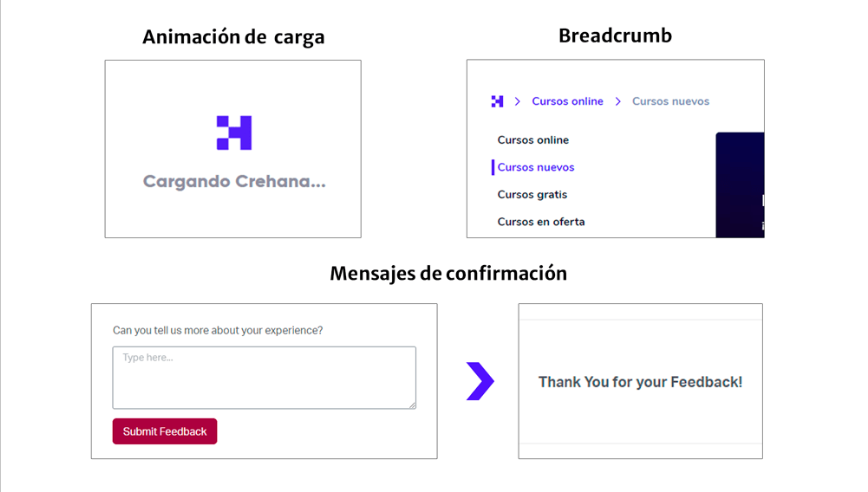
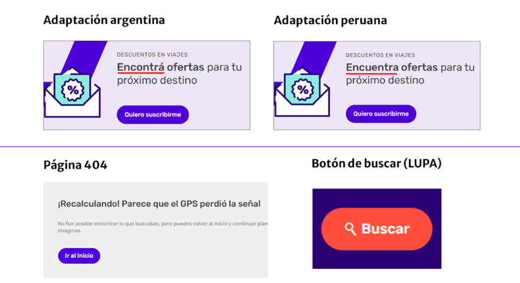
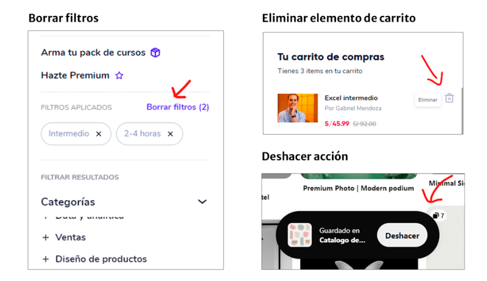
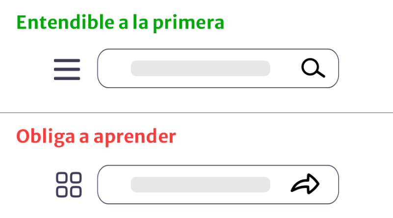
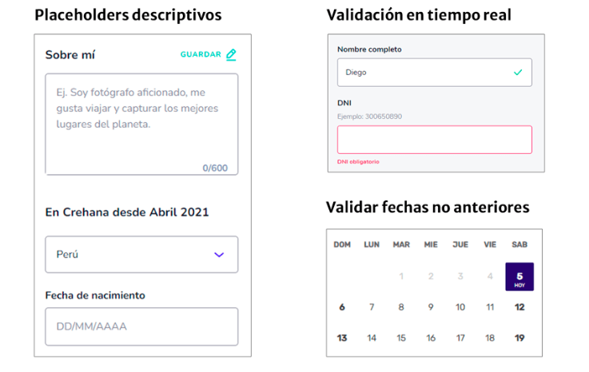
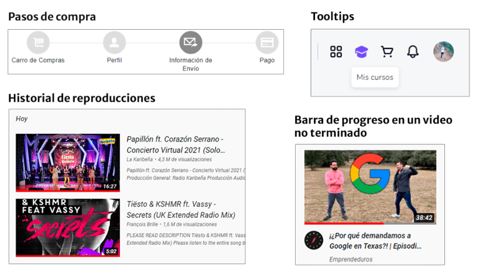
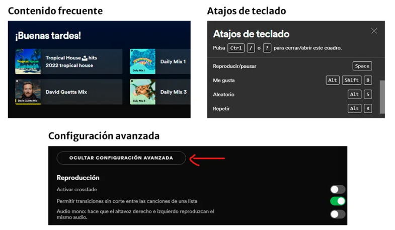
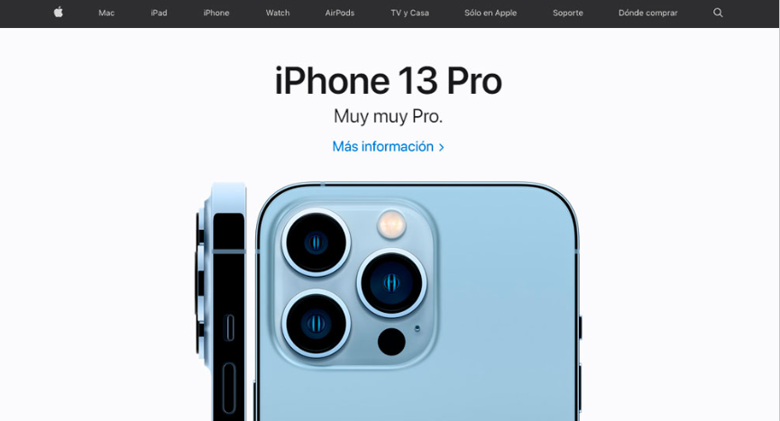
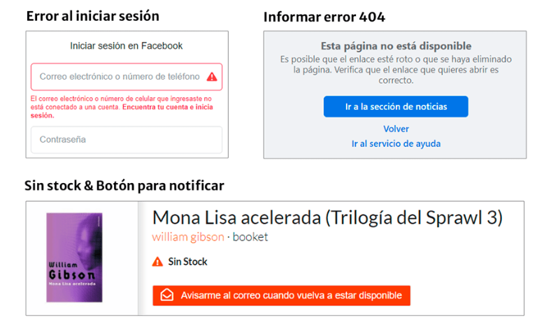
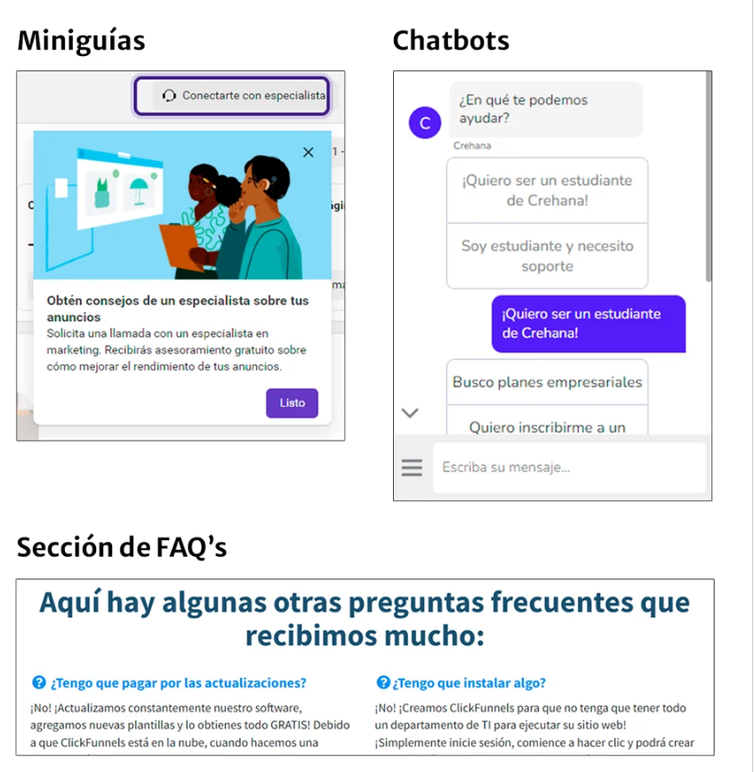

Investigación 2: Usabilidad Web y Diseño Centrado en el Usuario (DCU)
1. Conceptos Fundamentales de Usabilidad y DCU
¿Qué es la Usabilidad Web?
La Usabilidad es un atributo de calidad que mide qué tan fácil de usar es una interfaz web. Según la norma ISO 9241-11, se refiere al grado en que un producto puede ser utilizado por usuarios específicos para conseguir objetivos específicos con efectividad, eficiencia y satisfacción en un contexto de uso especificado.
Importancia de la Usabilidad:
- Mejora la Retención de Usuarios: Un sitio fácil de usar invita a los visitantes a permanecer más tiempo y a regresar.
- Incrementa la Tasa de Conversión: Una interfaz usable elimina las barreras que impiden al usuario completar acciones clave (comprar, registrarse, etc.).
- Refuerza la Confianza: Un sitio web que funciona bien y es fácil de navegar proyecta profesionalismo y credibilidad.
¿Qué es el Diseño Centrado en el Usuario (DCU)?
El Diseño Centrado en el Usuario (DCU) es una filosofía y un proceso de diseño iterativo en el que las necesidades, objetivos y limitaciones de los usuarios finales tienen un enfoque central en cada fase del proceso de diseño. En lugar de obligar al usuario a adaptarse a un sistema, el DCU adapta el sistema al usuario.
Importancia del DCU:
- Crea Productos Relevantes: Asegura que el producto final resuelva problemas reales para personas reales, aumentando su probabilidad de éxito.
- Minimiza el Riesgo de Fracaso: Al involucrar a los usuarios desde el principio, se identifican y corrigen problemas de diseño en etapas tempranas.
- Aumenta la Adopción y Lealtad: Los usuarios se sienten más cómodos y satisfechos con productos que están diseñados pensando en ellos.
2. Los 10 Principios de Usabilidad de Jakob Nielsen
1. Visibilidad del estado del sistema
El sistema debe mantener informado al usuario sobre lo que está ocurriendo en la web a cada momento. Trata de no dejar a los usuarios pensando «¿Qué está pasando ahora?»
Ejemplos:
- Animaciones que muestran cuando un sitio se encuentra cargando.
- Mensajes de confirmación al enviar un formulario.
- Breadcrumbs que muestran al usuario en qué parte del sitio se encuentra.
2. Consistencia entre el sistema y el mundo real
El sistema tiene que hablar el idioma del usuario. Se debe utilizar palabras, frases y conceptos que le sean familiares.
Ejemplos:
- Transcreación o adaptación de un mensaje de un idioma a otro.
- El botón de «buscar» representado con una «lupa».
- El término 404 por un mensaje como «Página no encontrada».
3. Control y libertad del usuario
Los usuarios suelen realizar acciones por error. Siempre debe existir una «salida de emergencia» para revertir una acción no deseada.
Ejemplos:
- Aplicar y borrar filtros al comprar productos.
- Deshacer una acción de guardado en Pinterest.
- Quitar elementos de un carrito de compras.
4. Consistencia y estándares
Los usuarios no deben verse obligados si diferentes palabras, situaciones o acciones significan lo mismo. Se debe seguir las convenciones establecidas en la plataforma y la industria.
Ejemplos que deben evitarse:
- Botón con una forma y que luego se muestra con un nuevo diseño y funcionalidad.
- Cambiar el «menú hamburguesa» por una «carita feliz» en la navegación.
5. Prevención de errores
Los buenos mensajes de error son importantes. Pero mejor aún, es crear un diseño que evite que los errores ocurran.
Ejemplos:
- Los placeholders en campos de texto, donde aclaran la acción que debemos realizar.
- La comprobación de campos de un formulario en tiempo real.
- Comprobar que la «Fecha de vuelta» sea después de la «Fecha de ida» al seleccionar un vuelo.
6. Reconocimiento en lugar de recuerdo
Minimizar el uso de memoria del usuario haciendo visibles los elementos, las acciones y las opciones.
Ejemplos:
- Historial de reproducciones de YouTube.
- Pasarela de pagos que te muestra en qué paso de la compra te encuentras.
- Breadcrumbs que muestran al usuario en qué parte del sitio se encuentra.
7. Flexibilidad y eficiencia de uso
Los usuarios más experimentados, deben poseer atajos y aceleradores para poder realizar sus operaciones más habituales.
Ejemplos:
- El reingreso a la app de Spotify te muestra las playlists que escuchas frecuentemente.
- Play/Pause con la tecla «espacio» en reproductores de video o música.
8. Diseño estético y minimalista
Las interfaces no deben contener información irrelevante o que rara vez se necesite. Se debe conocer qué tipo de contenido necesita el usuario.
Ejemplos:
- La página principal de Apple muestra solo los productos que desean destacar.
- El buscador de Google solo muestra un campo de texto y un par de botones.
9. Ayudar a los usuarios a reconocer, diagnosticar y recuperarse de errores
Los mensajes de error deben expresarse en un lenguaje entendible, sin códigos de error. Se debe describir con precisión el problema y sugerir constructivamente una solución.
Ejemplos:
- Si inicias sesión en Facebook y colocas un dato erróneo, la app te explicará en qué puedes estar fallando.
- Camuflar el código 404 o complementarlo con información adicional.
10. Ayuda y documentación
Lo ideal es que un sistema no necesite ninguna explicación adicional. Pero en algunos casos, se debe proporcionar una documentación para ayudar a los usuarios.
Ejemplos:
- Sección de Preguntas frecuentes (FAQs).
- Chats de ayuda o chatbots.
- Mostrar información en los iconos cuando se pasa sobre ellos (tooltips).
3. Ejemplo Práctico: Aplicación de Principios en este Sitio
En el diseño y la estructura de este sitio web de investigación, se han implementado conscientemente varios principios de usabilidad para mejorar la experiencia del usuario. A continuación, se justifica la aplicación de tres de ellos:
Consistencia y Estándares
Este principio se ha aplicado rigurosamente para crear una experiencia predecible. La estructura de navegación, la paleta de colores (negro, dorado y blanco) y la tipografía son idénticas en las tres páginas de investigación. El encabezado con el logo y el menú principal, así como el pie de página, ocupan la misma posición y tienen el mismo diseño en todo el sitio. Esto permite que el usuario aprenda a navegar por el sitio una sola vez, reduciendo la carga cognitiva y permitiéndole centrarse en el contenido.
Flexibilidad y Eficiencia de Uso
Para atender tanto a usuarios que exploran el proyecto en orden como a aquellos que buscan información específica, se ha implementado un menú de navegación persistente en la parte superior. Este menú actúa como un "acelerador", permitiendo saltar directamente de la investigación de SEO a la de Accesibilidad sin volver al inicio. Esta flexibilidad hace que la navegación sea mucho más eficiente para quienes ya conocen la estructura del sitio o tienen un objetivo claro.
Estética y Diseño Minimalista
Siguiendo la máxima de que "menos es más", el diseño de la página se centra exclusivamente en el contenido. Se utilizan amplios espacios en blanco, una paleta de colores limitada y una jerarquía tipográfica clara para evitar cualquier distracción visual. No hay elementos decorativos innecesarios. Cada elemento en la página tiene un propósito: estructurar la información y mejorar la legibilidad, asegurando que la atención del usuario se dirija a la investigación.
📚 Referencias
- Nielsen, J. (2020). 10 Usability Heuristics for User Interface Design. Nielsen Norman Group. Recuperado de https://www.nngroup.com/articles/ten-usability-heuristics/
- Interaction Design Foundation. (2025). User Centered Design. Recuperado de https://www.interaction-design.org/literature/topics/user-centered-design
- U.S. Department of Health & Human Services. (2025). Usability Definition and Rationale. Usability.gov. Recuperado de https://www.usability.gov/what-and-why/usability-definition.html